Pangong Tso
High-altitude lake famed for its changing colors and remote shoreline.
Ladakh is a landscape of wide skies, stark mountains and calm Buddhist monasteries. It offers unique high-altitude experiences: blue lakes (Pangong, Tso Moriri), desert vistas and local culture.
Travelers come for road trips, trekking, photography, and to explore remote valleys like Nubra and Zanskar. Expect strong sunlight, cold nights and thin air. Acclimatise in Leh before heading higher.
High-altitude lake famed for its changing colors and remote shoreline.
Sandy dunes, double-humped Bactrian camels and mountain vistas.
Large gompas with rich festivals, murals and cultural significance.
Remote quiet lakes and traditional nomadic settlements.
Epic high-altitude road trips crossing multiple passes and dramatic landscapes.
Lake visits with sunrise/sunset light and camping options.
Day treks around Markha, Stok or Lamayuru for varied terrain and views.
Adjust pace to allow for acclimatisation in Leh.
Quick trip
Classic circuit
Includes Tso Moriri & remote valleys
Comfortable hotels and guesthouses with services and acclimatisation support.
Best base for exploring Ladakh.
Lakefront tents and eco-camps. Expect basic to deluxe options depending on operator.
Book in advance during peak season.
Local stays offering cultural interaction and simple comforts.
Good for longer stays and cultural experiences.
 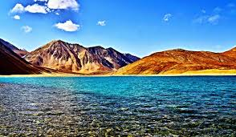
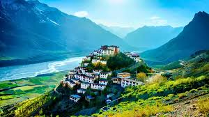
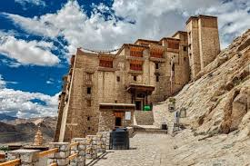
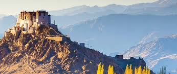
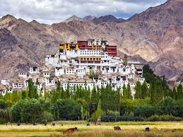
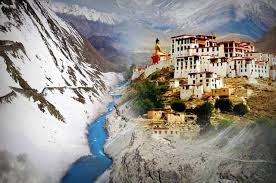
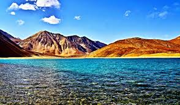
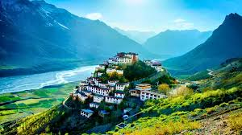
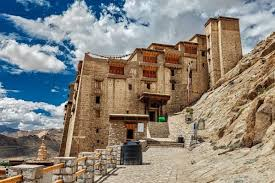
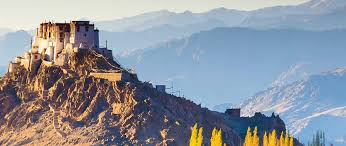
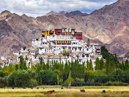
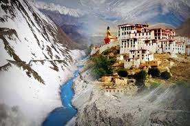
Essentials for high-altitude travel and comfort.